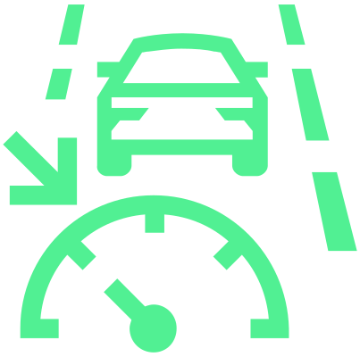
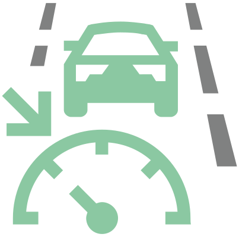
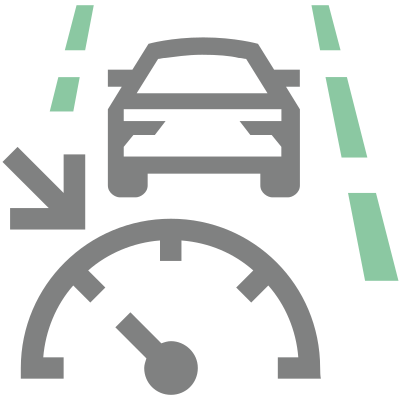

Travel Assist utilise les fonctions Lane Assist, ACC et Side Assist (selon l'équipement).

L’Travel Assist est avant tout prévue pour une utilisation sur autoroute.

MISE EN GARDE
Risque d’accident !
Veuillez toujours garder les mains sur le volant et soyez prêt à reprendre le contrôle du volant.
Prendre en compte les notes dans la description fonctionnelle de Lane Assist et ACC.
Affichage de l’état sur l’écran du combiné d’instruments

s’allume - le système est activé, le régulateur de vitesse et le guidage adaptif dans la voie sont activés

s’allume - le système est activé, le régulateur de vitesse est activé

s’allume - le système est activé, le guidage adaptatif dans la voie est activé

s'allume - vous avez lâché le volant, prendre le contrôle de la direction


s'allume - vous avez lâché le volant, prendre immédiatement le contrôle de la direction

Si vous ne réagissez pas à l’alerte, le système s’arrête automatiquement ou, en fonction de l’équipement du véhicule, l’assistant de situation d’urgence Assistant pour les situations d’urgence Emergency Assist est activé.
Assistant de maintien dans la voie adaptatif
La fonction maintient la position sélectionnée par le conducteur dans la voie.
Travel Assist en utilisant les données partagées en ligne
Afin de mieux évaluer la situation, le système utilise des données partagées avec d'autres véhicules (selon le niveau de finition, la fonction spécifiée peut ne pas être disponible dans le véhicule et sur le marché donné).
Les conditions suivantes doivent être remplies pour l'utilisation des données partagées :
Travel Assist est activé.
Le véhicule est connecté à Internet.
Le mode en ligne (partage des données de localisation, de véhicule et d'utilisateur) Škoda Connect est activé.
Une licence de données en ligne active est disponible dans le véhicule pour Travel Assist.
Changement de voie avec l'aide de l'assistant
S'applique aux véhicules équipés des systèmes Side Assist et l’assistant de stationnement intelligent.
La fonction permet un changement de voie automatique en plaçant le levier des clignotants en position sur ressort.
La fonction est prévue exclusivement pour une utilisation sur autoroute.
Pour activer la fonction, le Travel Assist doit être réactivé lors de la conduite sur autoroute.
Indicateur à l'écran
S'applique aux véhicules avec la fonction de changement de voie à l'aide de l'assistant.
- A
Flèches indiquant l'état du changement de voie à l'aide de l'assistant.
Flèche pleine - un changement de voie dans le sens de la flèche est possible. La voie secondaire est mise en surbrillance.
Flèche avec contour – il n'est pas possible de changer de voie dans le sens de la flèche.
- B
Voie implicite lors d'une manœuvre de dépassement.
Lorsque le système détecte qu'il est sécuritaire de changer de voie, l'écran affiche une flèche pleine pointant dans la direction donnée.
Régler le levier de clignotant en position auto-rabattue. Le véhicule change de voie.